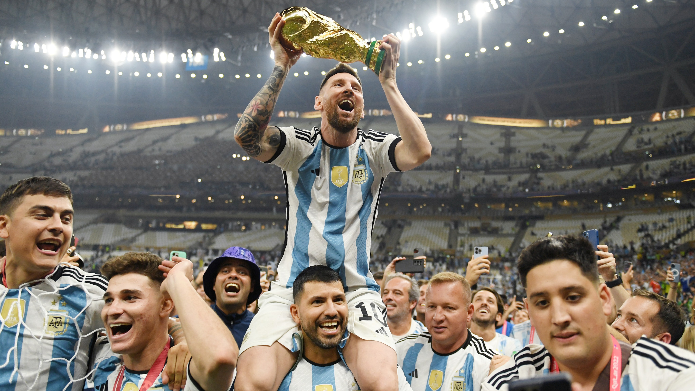

Throughout Messi’s Career, he has multiple moments that cannot be forgotten. These are some of the many moments he has created.
It was the 2017 El clásico. Both teams had stars of their own and were both masterclasses. While Messi played for Barcelona, the man who rivaled his legacy, Cristiano Ronaldo played for Real Madrid, the opposition team. The game was intensely played. The score went back and forth. The game was tied up after 90 minutes, 2-2. Two extra minutes were given. In the last thirty seconds, Messi scores the tie-breaker to secure the win for Barcelona. That goal goes on to be Messi’s 500th goal.
Messi’s and his team’s victory in the 2022 WC series was a massive milestone for Messi’s career and put him in a stellar position in the history of football. Throughout Messi’s career, he has won multiple awards, but he had not won the WC. In 2014 Messi had an opportunity but fell close and won second place in the tournament. In 2022, he emerged to the top again for another chance with the world cup. After a difficult series of matches, Argentina makes it to the finals against France. The score stayed in favor of Argentina for most of the game, but Mbappe got the score to be tied. The game went into overtime where Messi and Mbappe scored again, pushing the game to the penalties. In the end, Argentina comes out victorious marking history in football.
Throughout Messi's career, he has won multiple awards for his talent. Here are some of the awards he has received.
| Individual Awards | Club Awards |
|---|---|
|
|